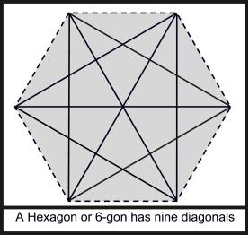

The number of diagonals of an n-gon is not less than N.
What is the minimum possible value of n?

The input file contains less than 1001 lines of inputs. Each line contains a positive
integer N (
N 1015) that indicates the
minimum possible number of diagonals. Input is terminated by a line containing
a zero. This line should not be processed.
For each line of input produce one line of output, which
contains the output serial number, and also the minimum possible value for n (Number of sides).
1015) that indicates the
minimum possible number of diagonals. Input is terminated by a line containing
a zero. This line should not be processed.
For each line of input produce one line of output, which
contains the output serial number, and also the minimum possible value for n (Number of sides).
10
100
1000
0
Case 1: 7
Case 2: 16
Case 3: 47
Miguel Revilla
2004-12-02